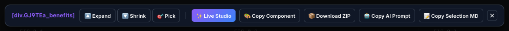
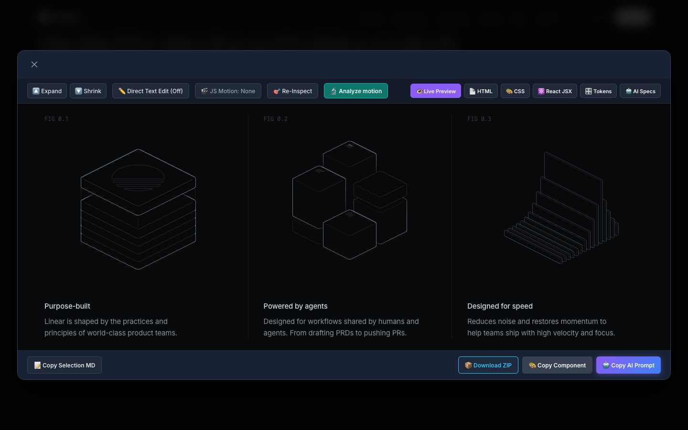

Hai ảnh bên dưới là giao diện hiện tại. Các khung bên dưới ảnh là nội dung brief; chọn một đáp án ở bảng bên cạnh để xem khung đổi theo.


| Đầu ra | Style | CSS animation / hover | Motion theo con trỏ (JS) |
|---|---|---|---|
| Tab HTML (Studio) | không | không | không |
| React JSX | qua styles.css | qua styles.css | không |
| styles.css | có | có | không |
| ZIP index.html | cần styles.css | hover có, keyframes không | có |
| Copy Component | có, một tệp | có | có |
| Popup HTML Snapshot | có | chỉ CSS | không |
Hiện trạng: dock 9, Studio 17 (6 tab + 11 nút khác). Chưa chọn cách đếm.
Hiện trạng: nằm trong 9 nút của dock. Giới hạn 5 buộc phải chọn.
Hiện trạng: không có nhãn nào. Tab HTML ghi "Markup Only", ZIP cũng có tệp tên index.html.